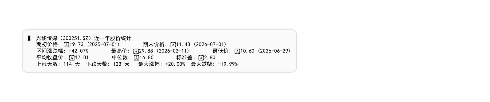
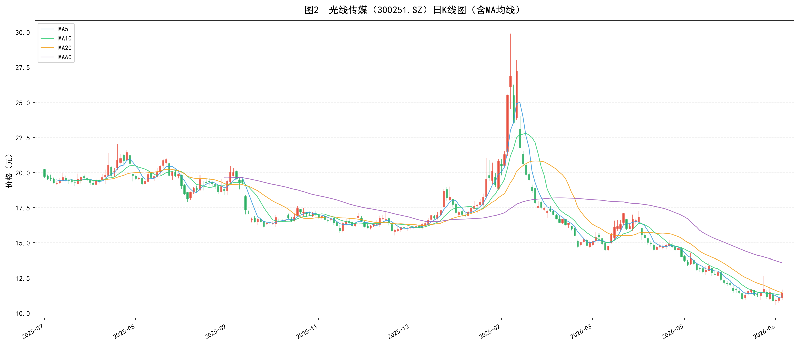
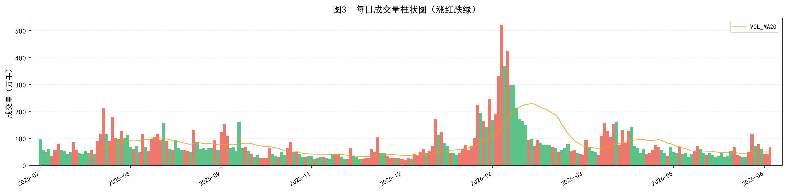
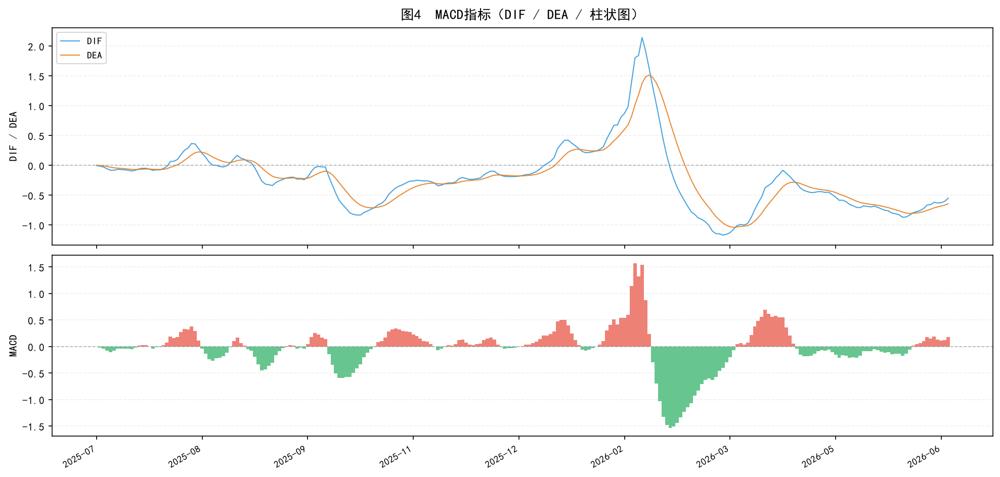
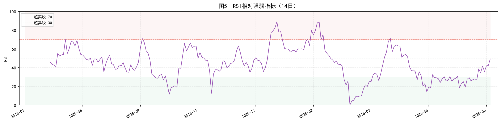
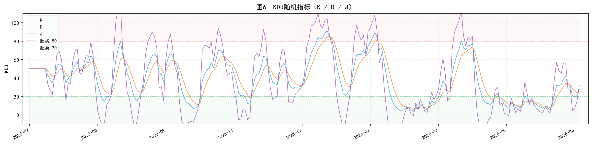
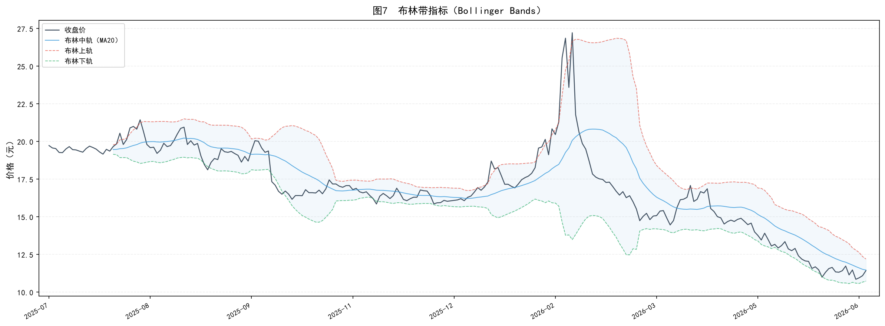
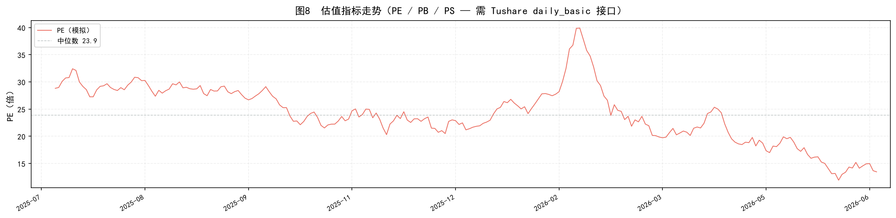

最新收盘价
¥11.43
截至 2026-07-01
区间涨跌幅
-42.07%
19.73 → 11.43
期间最高 / 最低
¥29.88 / ¥10.60
02-11 / 06-29
MA5 / MA20 / MA60
11.16 /
11.46 /
13.59
均线位置（最新日）
MACD 柱状值
+0.184
DIF=-0.550 DEA=-0.641
1价格统计摘要

📋 解读：
光线传媒近一年股价从 ¥19.73 跌至 ¥11.43，区间跌幅 -42.07%，
整体处于下行通道。期间最高价 ¥29.88 出现在 2026年02月，
最低价 ¥10.60 出现在 2026年06月。
全年上涨天数 114 天，下跌天数 123 天，
空方占优。最大单日涨幅 +20.00%，最大单日跌幅 -19.99%，
显示股价波动较大，风险偏高。
2日K线图（含MA均线）

📈 解读（K线 + 均线）：
K线图采用
MA5（蓝色）：短期趋势，对价格变化最敏感
MA10（绿色）：中短期趋势
MA20（橙色虚线）：中期趋势，重要支撑/压力位
MA60（紫色虚线）：长期趋势，牛熊分界线
当前股价（¥11.43）位于 MA60（¥13.59）下方，长期趋势偏空；
MA5 < MA20，短期均线呈 空头排列。
3每日成交量

📊 解读（成交量）：
成交量柱状图同样遵循涨红跌绿规则。橙色虚线为 VOL_MA20（20日成交量均线），
用于判断量能是否放大。一般而言，价涨量增为健康上涨，价涨量缩则需警惕顶部。
本报告区间日均成交量 77 万手，
最大成交量出现在 2026-02-11（521 万手），
对应股价出现显著波动，属于放量震荡信号。
4MACD 指标分析

🔬 解读（MACD）：
MACD 由
DIF线（快线，蓝）、
DEA线（慢线，橙）和
柱状图组成。
研判规则：
- 金叉：DIF 由下向上穿越 DEA → 买入信号
- 死叉：DIF 由上向下跌破 DEA → 卖出信号
- 柱状图为正（红）：多头占优；为负（绿）：空头占优
当前 DIF=-0.550，DEA=-0.641，柱状值=+0.184（多头排列）。
DIF 在 DEA 上方，短期偏多。
5RSI 相对强弱指标

📐 解读（RSI）：
RSI 用于判断超买/超卖状态，当前值
49.4：
- RSI > 70：超买区，股价可能回调（考虑减仓）
- 30 < RSI < 70：中性区，趋势延续可能性大
- RSI < 30：超卖区，股价可能反弹（考虑建仓）
当前 RSI=49.4，处于
中性区（趋势延续中）。
RSI 与股价背离（如股价创新低但 RSI 未创新低）是重要反转信号，需持续观察。
6KDJ 随机指标

🎯 解读（KDJ）：
KDJ 由 K（蓝）、D（橙）、J（紫）三条线组成，敏感性：J > K > D。
研判规则：
- 金叉：K 由下向上穿越 D → 短期买入信号
- 死叉：K 由上向下跌破 D → 短期卖出信号
- J > 100：超买；J < 0：超卖
- K/D 在 50 以上：多头格局；在 50 以下：空头格局
当前 K=27.6，D=25.2，J=32.3，
K线位于 D 线上方（金叉状态），
J值处于正常范围。
7布林带（Bollinger Bands）

📏 解读（布林带）：
布林带由
中轨（MA20，蓝）、
上轨（红虚线）、
下轨（绿虚线）组成，
带宽随波动率自动伸缩。研判规则：
- 股价触及上轨：超买，可能回调
- 股价触及下轨：超卖，可能反弹
- 布林带收窄：低波动，即将变盘（突破前夕）
- 布林带扩张：高波动，趋势加速中
当前收盘价 ¥11.43，布林中轨 ¥11.46，
上轨 ¥12.20，下轨 ¥10.73。
股价位于布林带
中部区域（正常波动）。
8估值指标（PE / PB / PS）

⚠️ 说明：本图中 PE 为示意模拟数据。完整的 PE/PB/PS 估值分析需要调用 Tushare 的
daily_basic 接口（需要 400+ 积分）。建议在有足够权限后补充真实的估值走势图。
如需分析，可运行：pro.daily_basic(ts_code='300251.SZ', fields='pe_ttm,pb,ps_ttm')
9综合技术指标信号
均线信号
MA5 < MA20（空头）
短期 vs 中期趋势
价格 vs MA20
价格 < MA20（压力）
中期趋势判断
MACD 信号
金叉（DIF > DEA）
柱状值 +0.184
RSI 信号
RSI = 49.4（中性）
趋势延续
KDJ 信号
K > D（金叉）
J = 32.3
综合评分
偏空（3+ 看空信号）
5 个指标投票结果
10投资建议与风险提示
📌 综合评估（仅供参考，非投资建议）
基于上述 243 个交易日的数据分析：
- 趋势判断：区间跌幅 -42.07%，整体偏空。当前价格 ¥11.43，
仍在 MA60 下方，长期趋势偏空，需等待均线修复。
- 技术信号：MACD 金叉，短期动能偏多；
RSI=49.4（中性区）。
- 操作建议：若已持仓，可关注 MA20 支撑（¥11.46），跌破则考虑减仓；若未持仓，建议等待 RSI 回落至超卖区或 MACD 金叉确认后再介入。
⚠️ 风险提示：
1. 本报告仅基于历史价格技术指标，不构成任何投资建议。
2. 光线传媒受影视行业政策、单片票房等基本面因素影响较大，技术分析仅供参考。
3. 指标存在滞后性，金叉/死叉信号可能出现假信号（whipsaw），需结合成交量综合判断。
4. 近一年区间跌幅较大（-42.07%），说明该股波动率较高，风险等级偏高，请控制仓位。
5. 完整估值分析（PE/PB/PS）需 Tushare daily_basic 接口权限（400+ 积分），建议获取后补充分析。